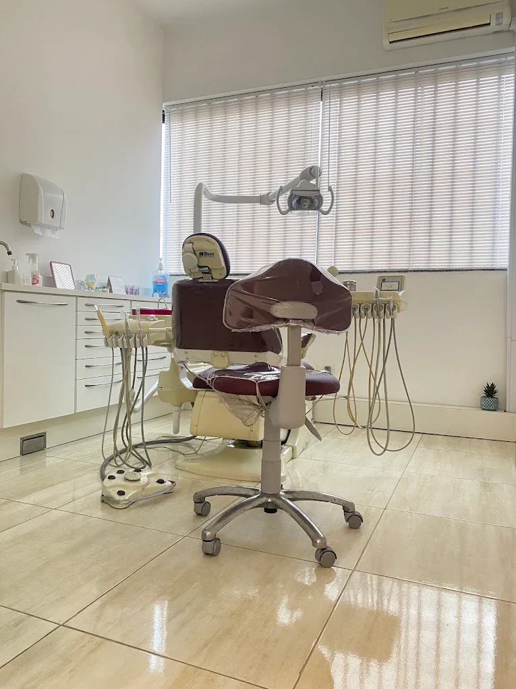
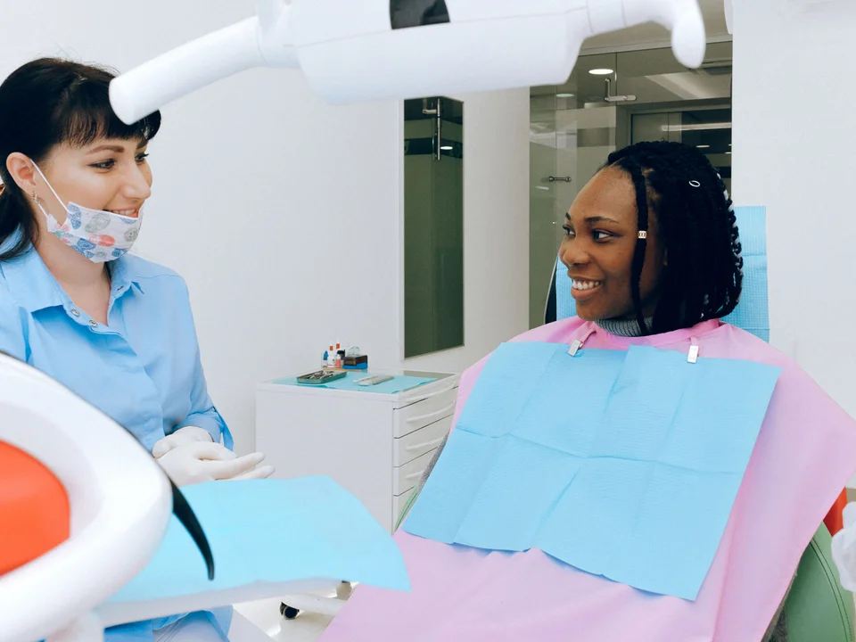
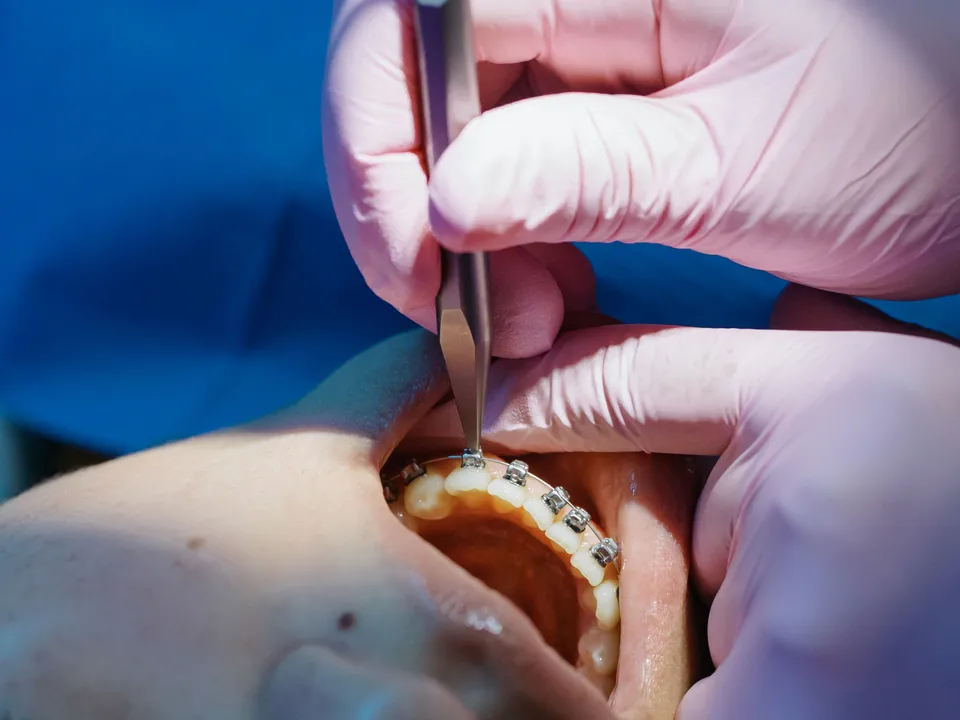
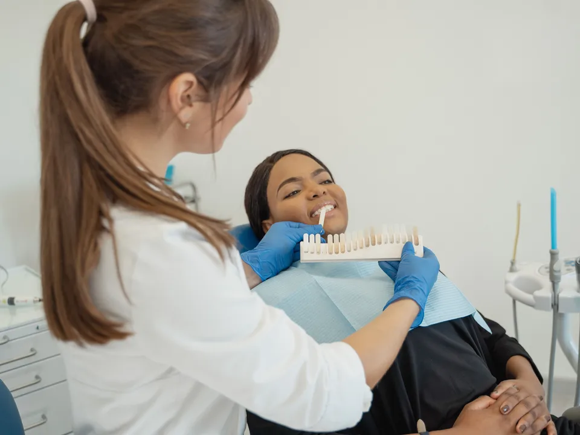
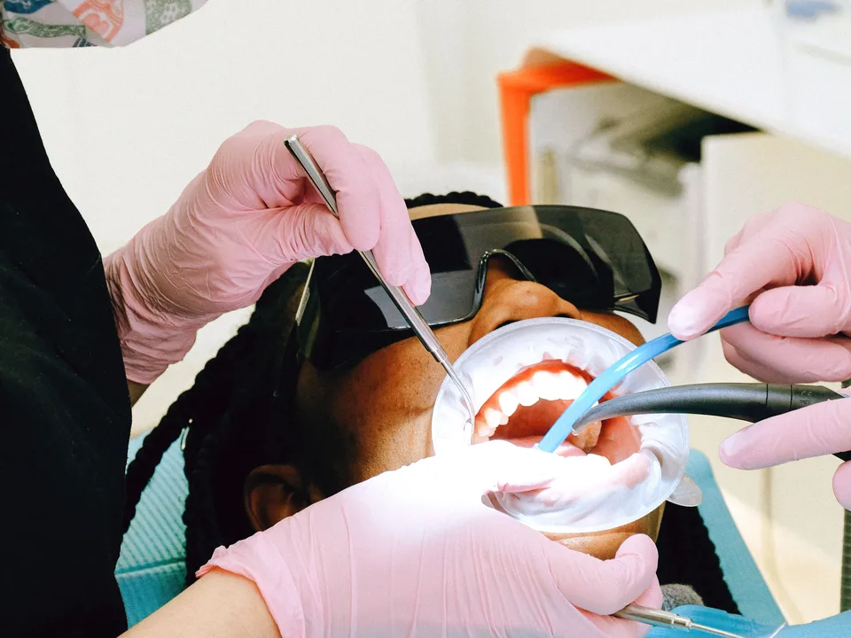
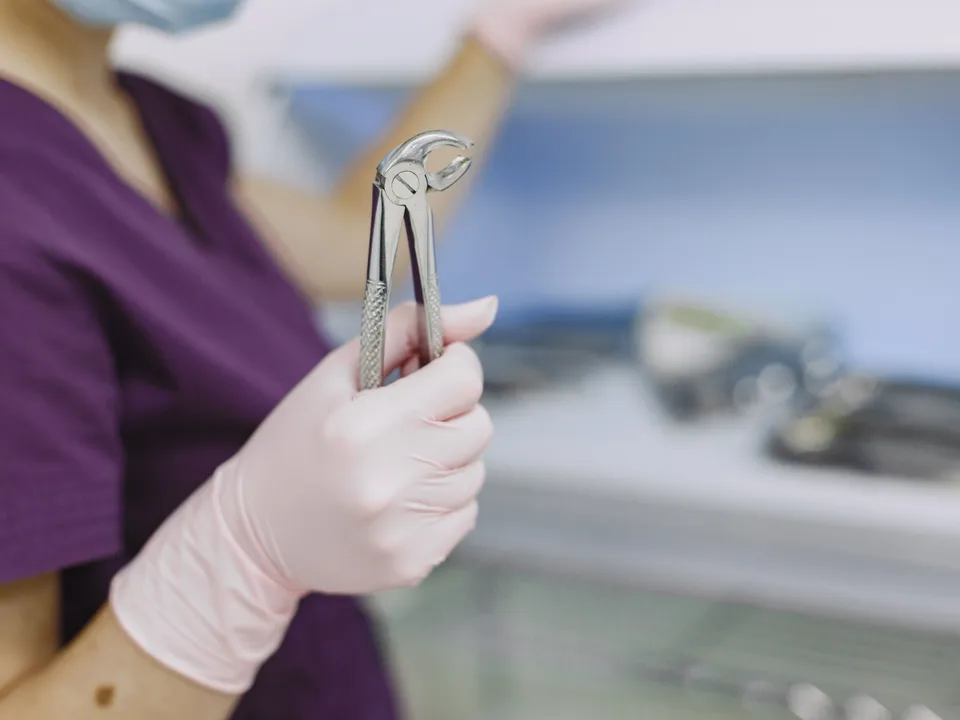
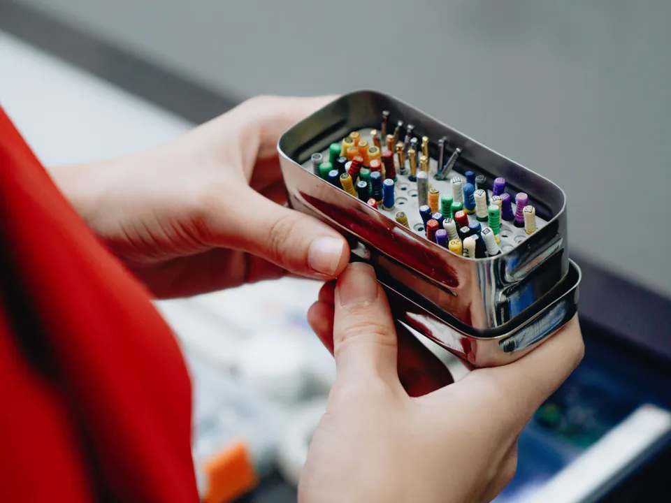
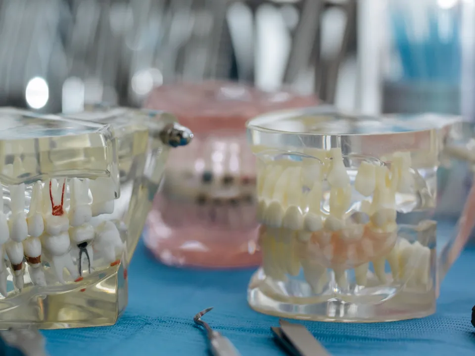
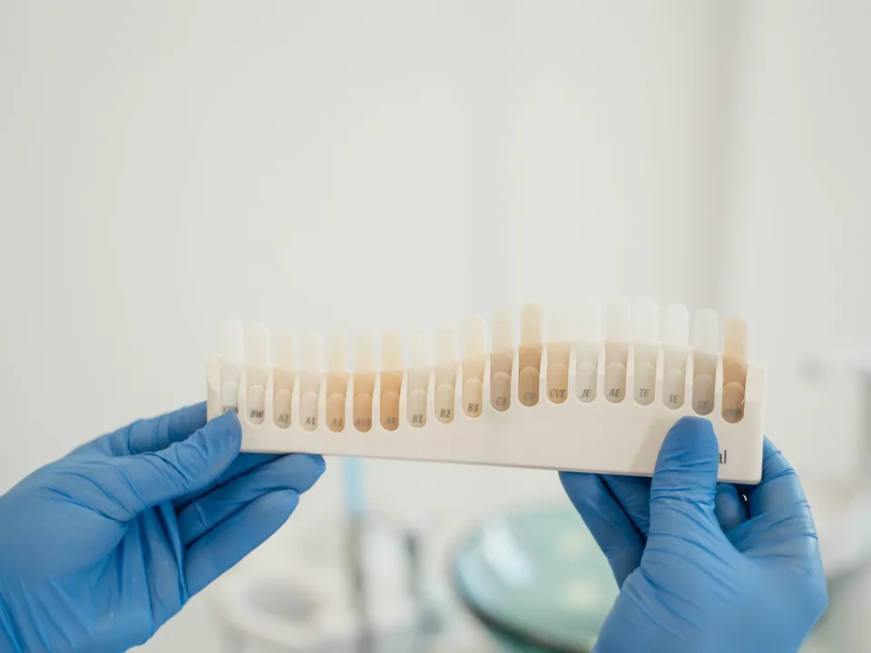
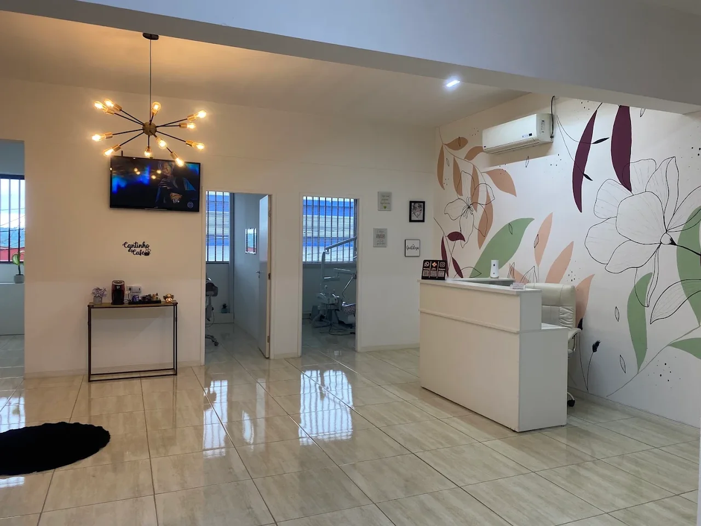

Odontologia e Estética
Dra. Camila Meilãn
Cuidado odontológico com escuta, clareza e atenção a você.

Sobre a Dra. Camila
Antes de cuidar,
conhecer você.
Cada pessoa chega com dúvidas, expectativas e uma história. Dar espaço a essa conversa é o ponto de partida para um cuidado próximo.
A proposta da Dra. Camila é ouvir com atenção e conversar com clareza, considerando o que você sente e o que deseja compreender sobre sua saúde bucal.
Camila Meilãn do Nascimento
Odontologia e EstéticaServiços
Cuidado para o seu sorriso,
em diferentes momentos.
Da consulta de rotina às necessidades específicas, conheça os serviços oferecidos e converse com a Dra. Camila sobre o seu cuidado.

Clínica geral
Avaliação da saúde bucal e conversa sobre os cuidados que fazem sentido para você.

Aparelhos odontológicos
Avaliação para o uso de aparelho, com espaço para entender as possibilidades de cuidado.

Clareamento dental
Conversa sobre seus objetivos e avaliação para clareamento, considerando cada caso.

Limpeza dental
Limpeza profissional e orientações de cuidado para o dia a dia.

Extração de dentes
Avaliação da necessidade de extração, com explicações e atenção às suas dúvidas.

Tratamento de canal
Atendimento para tratamento de canal, com clareza sobre as etapas do cuidado.

Implantes e próteses
Avaliação das possibilidades de reposição dentária conforme as necessidades de cada pessoa.

Lentes em resina
Avaliação para lentes em resina e conversa sobre seus objetivos estéticos.
O atendimento
Espaço para perguntar.
Clareza para compreender.
O cuidado também está na forma de conversar. Uma escuta atenta e informações compreensíveis ajudam você a participar dessa conversa.
Escutar a sua história
Suas experiências, dúvidas e expectativas têm espaço desde o início da conversa.
Explicar com clareza
Informações em palavras simples, com abertura para perguntar e compreender as orientações.
Considerar você
Atenção às suas necessidades e ao que importa para você ao conversar sobre o seu cuidado.
O consultório
Um espaço para
o seu cuidado.
Conheça a recepção e o ambiente de atendimento do consultório.

Contato
Vamos conversar sobre o seu cuidado.
Entre em contato para saber mais sobre uma consulta com a Dra. Camila.
Conversar pelo WhatsAppWhatsApp · (11) 95086-9006